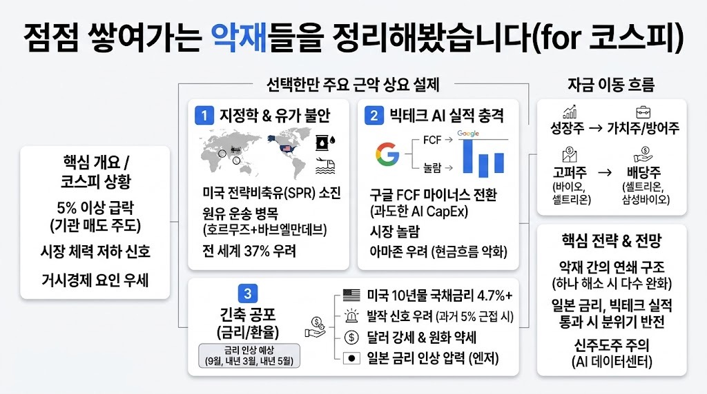

전인구경제연구소MORNING DIGEST · 2026-07-26 · 전인구경제연구소🎬 영상
점점 쌓여가는 악재들을 정리해봤습니다(for 코스피)

01핵심 개요
항목
내용
채널
전인구경제연구소
제목
점점 쌓여가는 악재들을 정리해봤습니다(for 코스피)
길이
약 14분 29초(869초)
핵심결론 1
코스피가 5% 넘게 급락하며 한 달 전 9,300선에서 크게 밀렸고, 하락일마다 기관 매도가 공통 원인으로 지목됨
핵심결론 2
구글(알파벳)의 AI 자본지출 급증으로 잉여현금흐름(FCF)이 마이너스로 전환된 것이 시장에 충격을 줬고, 다음 주 애플·아마존·MS·메타 실적 발표를 앞두고 긴장감이 커짐
핵심결론 3
진행자는 현재 증시를 누르는 부담 요소를 전쟁·유가, 빅테크 AI 투자 위축, AI 토큰 가격 하락, 금리·환율, 트럼프발 변수 등 7가지로 정리해 소개
02핵심 내용 구조
1) 오늘 급락의 특징 — 기관 매도, 체력 저하 신호
영상에서 코스피가 5% 넘게 떨어진 날의 공통점으로 "개인은 사고 기관은 판다"는 패턴이 지목됩니다.
진행자는 한 달 전 코스피가 9,300선까지 올랐던 것을 언급하며, 짧은 기간에 이 정도로 밀리는 모습은 시장 체력이 약해졌다는 신호일 수 있다고 짚습니다.
실적이 좋아도 주가가 오르지 않는 최근 흐름에 대해, "실적이 전부가 아니다"라며 매크로(거시경제) 요인이 함께 작용하고 있다는 시장의 시각을 소개합니다.
2) 구글(알파벳) 실적 충격 — AI 지출이 만든 마이너스 현금흐름
구글은 검색시장 90% 장악, 광고 수익, 안드로이드 생태계 수수료, 유튜브 애드센스, 제미나이(Gemini) 관련 수익 등 압도적 현금창출력을 가진 기업으로 소개됩니다.
그럼에도 AI 지출 투자가 급격히 늘면서 자본지출이 커졌고, 그 결과 잉여현금흐름(FCF)이 마이너스로 전환된 것이 시장에 놀라움을 줬다고 설명합니다.
다음 주 실적 발표를 앞둔 애플·아마존·마이크로소프트·메타 중 "아마존이 제일 걱정된다"고 언급되며, 이유로 이미 두 분기 연속 현금흐름이 나빠진 상태라는 점이 제시됩니다. 메타는 투자 규모를 크게 늘리지 않아 아슬아슬하게 균형을 맞춘 상태, 마이크로소프트는 의외로 잘 버티고 있다고 소개됩니다.
3) 자금 이동 — 성장주에서 가치주·방어주로
최근 상대적으로 덜 올랐던 셀트리온, 삼성바이오로직스 같은 바이오주가 오히려 오르는 이유로, 현금창출력이 좋고 AI·경기 민감도와 무관하며 저평가 인식이 있다는 점이 제시됩니다.
진행자는 이를 "불확실성에서 확실성으로", 즉 성장주→가치주, 경기민감주→경기방어주, 고퍼(고성장)주→배당주로 자금이 이동하는 흐름으로 설명하며, 시가총액 상위권에서도 경기민감주들이 밀리는 모습이 나타나고 있다고 짚습니다.
4) 7가지 부담 요소 — ① 전쟁과 유가
진행자가 정리한 첫 번째 부담 요소는 전쟁으로, 이번 중동 관련 분쟁이 지속될 경우 유가를 방어할 수 있을지가 관건이라고 소개됩니다.
미국의 전략비축유(SPR)가 과거 러시아-우크라이나 전쟁 대응 과정에서 많이 소진돼 충원이 부족한 상태이며, 원유 재고가 2010년경 70만 배럴 수준에서 25만 배럴 수준까지 줄었다는 수치가 언급됩니다.
예멘 후티 반군에 이란이 무기를 지원한다는 이야기가 나오면서, 호르무즈 해협(25%)과 바브엘만데브 해협(12%)을 합쳐 전 세계 원유 운송의 약 37%가 막힐 수 있다는 우려가 소개됩니다. 이 경로가 막히면 아프리카를 우회해야 해 운송 기간이 한 달가량 늘어날 수 있다고 설명합니다.
5) 부담 요소 ② — 빅테크 AI 투자 위축 가능성
시장이 AI 지출 확대에 놀라 "발작"하면, 빅테크들이 투자를 늘리겠다는 계획을 접거나 유지 수준에 머물 수 있다고 짚습니다.
이 경우 반도체를 파는 쪽의 성장성 둔화로 이어질 수 있고, 금리·물가 상승으로 자재값과 대출조달비용, 전기료까지 오르면 AI 투자 확대가 더욱 어려워지는 악순환이 될 수 있다고 설명합니다.
6) 부담 요소 ③ — AI 토큰 가격 하락(중국발 가격 경쟁)
앤트로픽 클로드 계열 모델("페이블")이 약 2.94달러, 키미(Kimi) K3가 약 3달러 수준으로 소개되며, 이전 버전 K2 대비 약 세 배 가격을 올린 사례가 언급됩니다.
반면 알리바바 등 중국 기업들은 토큰 가격을 오히려 낮추는 가격 경쟁(치킨게임) 양상을 보이고 있어, AI 업계 전반의 토큰 가격이 양극화되며 하락 압력을 받고 있다고 설명합니다. 이는 안 그래도 적자 상태인 AI 사업의 수익성을 더 악화시키는 요인으로 지목됩니다.
7) 부담 요소 ④ — 금리·환율(연준 매파 전환, 일본 금리인상, 강달러)
연준이 매파적(긴축적)으로 돌변할 수 있다는 이야기와 함께, 일본 엔화가 163엔까지 약세를 보이면서 일본이 예정에 없던 금리인상을 해야 할 상황이 올 수 있다고 소개됩니다(7월 인상 가능성은 낮게 보되, 인상 시점이 앞당겨질 수 있다는 견해).
미국 10년물 국채금리가 4.7%를 넘어선 점이 "진짜 안 좋은 신호"로 언급되며, 과거 5%에 근접했을 때 시장이 발작했던 사례, 통상 4.55%를 넘어도 부정적으로 본다는 기준이 소개됩니다.
금리 상승은 강달러·원화 약세 요인으로 이어지며, SK하이닉스 ADR 흐름이 현재 원화 방어에 일부 기여하고 있다는 언급도 나옵니다. 시장은 향후 금리인상을 9월, 내년 3월, 내년 5월 총 세 차례로 예상하고 있으며, 기대 인플레이션이 현재 2.3%에서 3%까지 오르면 10년물 금리가 5.4%까지 치솟을 수 있다는 시나리오가 제시됩니다.
8) 부담 요소 ⑤ — 트럼프발 변수와 이란 관련 시나리오
트럼프 대통령의 예측 불가능한 발언이 시장 불안 요인으로 지목되며, 미국이 전쟁을 멈출 기미가 보이지 않는 상황에서 이란 핵시설을 강하게 타격해 핵개발 능력 자체를 제거하려 할 가능성이 언급됩니다.
사우디아라비아의 우라늄 농축 허용 관련 논의는, 이란을 협상 테이블로 끌어들이기 위한 카드이거나 혹은 이란 압박에 대한 대가성 요구일 수 있다는 두 가지 해석이 제시됩니다.
9) 반도체·시장 유동성 관련 보조 지표
메모리 가격은 아직 하락하지 않았고 GPU 임대 가격도 상승 추세여서, 반도체 부문 자체는 현재까지 나쁘지 않다고 평가됩니다.
S&P500 공매도 비율이 꾸준히 상승 추세를 보이는 한편, 개인 투자자 비중과 내부자 매도, IPO 건수도 모두 사상 최고 수준으로 동시에 나타나는 등 시장 내 낙관과 비관 신호가 혼재된 상태로 소개됩니다.
03기술적 맥락
잉여현금흐름(FCF, Free Cash Flow): 기업이 영업으로 벌어들인 현금에서 설비투자 등 지출을 뺀 금액으로, 이것이 마이너스라는 것은 버는 돈보다 쓰는 돈(특히 AI 인프라 투자)이 더 많다는 의미입니다.
전략비축유(SPR): 국가가 유사시를 대비해 비축해 둔 원유로, 유가 급등기에 시장에 풀어 가격을 방어하는 데 쓰입니다.
호르무즈·바브엘만데브 해협: 중동산 원유가 아시아·유럽으로 나가는 핵심 해상 병목 구간으로, 두 곳을 합치면 세계 원유 운송량의 상당 비중(영상에서는 약 37%)이 지나갑니다.
매파(Hawkish): 물가 안정을 위해 금리를 올리거나 긴축적 통화정책을 선호하는 성향을 뜻합니다.
기대 인플레이션: 시장 참여자들이 앞으로 물가가 얼마나 오를지 예상하는 수치로, 실제 금리 결정에 영향을 줍니다.
04전략적 의미
진행자는 시장을 누르는 요인들이 서로 얽혀 있어 한두 가지(특히 전쟁 종식과 유가 안정)만 해소돼도 나머지 부담 상당수가 동시에 완화될 수 있다고 봅니다.
반대로 일본 금리와 빅테크 실적이라는 두 변수만 잘 넘기면 시장 분위기가 빠르게 반전될 수도 있다는 낙관적 시나리오도 함께 제시됩니다.
자금 흐름상 최근 새로운 주도주로 AI 데이터센터 관련주가 부상하는 흐름이 보인다며, 투자자들에게 이 흐름을 주의 깊게 볼 필요가 있다고 조언합니다(인용 톤).
05핵심 워크플로우·방법론
진행자는 시장 급락 시 원인을 개별 이슈로 흩어보지 않고, 전쟁·유가, 빅테크 투자, AI 토큰 가격, 금리·환율, 정치 변수 등 카테고리별로 나눠 정리하는 방식을 취합니다.
각 악재별로 "얼마나 상황이 나쁜가"와 "다른 악재와 어떻게 연결되는가"를 함께 짚어, 하나가 풀리면 여러 악재가 동시에 완화될 수 있는 연쇄 구조를 파악하는 접근을 보여줍니다.
시가총액 상위 종목군의 움직임과 자금이 성장주에서 가치주·방어주로 이동하는 패턴을 관찰해, 시장의 위험 선호도 변화를 판단하는 방법론을 제시합니다.
06활용 시나리오
코스피 급락 국면에서 원인을 체계적으로 정리하고 싶은 개인 투자자가 리스크 체크리스트로 참고할 수 있습니다.
중동 정세와 유가, 원유 운송 경로가 국내 증시·환율에 미치는 영향을 이해하려는 투자자에게 배경지식으로 활용될 수 있습니다.
빅테크 실적 발표 시즌을 앞두고 AI 관련 자본지출과 현금흐름 지표를 어떻게 해석해야 할지 참고하려는 투자자에게 도움이 될 수 있습니다.
성장주에서 가치주·방어주로의 자금 이동 신호를 포착해 포트폴리오 리밸런싱을 고민하는 투자자가 참고할 수 있습니다.
07현황 및 전망
영상 시점 기준 코스피는 5% 넘는 급락을 겪은 직후이며, 진행자는 7가지 악재가 동시에 겹친 상태라고 진단합니다.
전쟁·유가 문제가 완화되면 나머지 악재 중 상당수(영상에서는 네다섯 개 언급)의 영향이 함께 줄어들 수 있다는 시나리오와, 일본 금리·빅테크 이슈만 잘 넘기면 다음 달에는 시장이 다시 반등할 수도 있다는 시나리오가 함께 제시됩니다.
다음 주 애플·아마존·마이크로소프트·메타의 실적 발표가 단기 방향성을 좌우할 핵심 이벤트로 지목되며, 진행자는 최근 자금이 AI 데이터센터 관련주로 새롭게 쏠리는 흐름을 주목할 필요가 있다고 언급하며 영상을 마무리합니다.